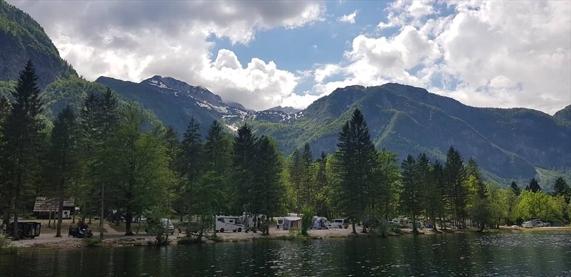
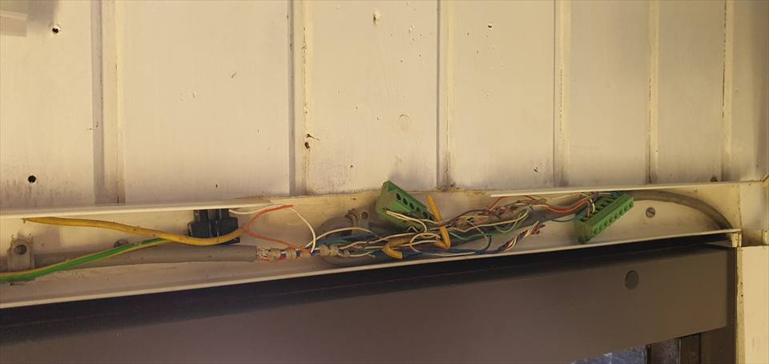
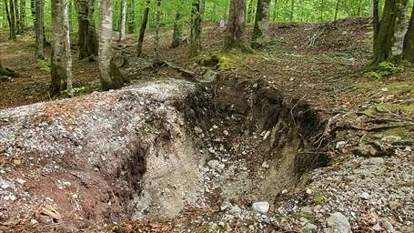
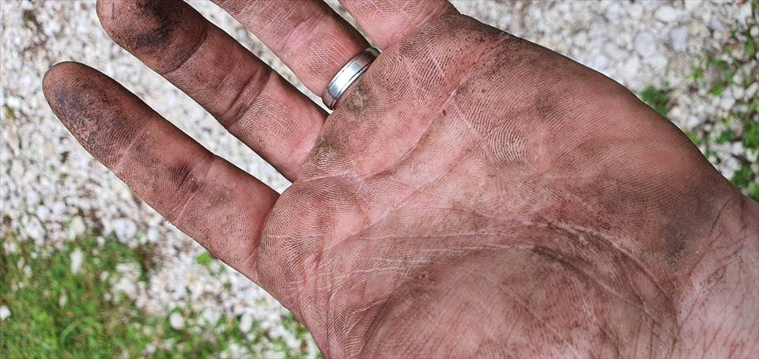

Izguba zunanje povezave
Kaj se nadaljuje, kaj se premakne, kako hitro se obnovi in katera obremenitev to opazi.
Preverjanje pred objavo
Terenski dokazi se začnejo pri tem, kaj delovanje potrebuje, kaj počne okolje in kako je videti odpoved. Izid postane javna trditev šele, ko vir, obseg in besedilo prenesejo presojo.
Lestev dokazov
Vsak korak odgovori na drugo vprašanje. Izpuščen korak ustvari zgodbo, ki zveni čisteje od resničnega sistema.
Pred spremembo sistema zabeležiti okolje delovanja, opažene simptome in trenutne odvisnosti.
Zunanje povezave, napajanje, usmerjanje, brezžične in delovne odvisnosti prikazati dovolj jasno za preizkus.
Preveriti pri gostoti, gibanju, času in poslovnem pritisku, ki jih lokacija dejansko ustvarja.
Navesti le to, kar meritve, obdobje in pogoji sprejema neposredno podpirajo.
Uporabni sprejemni preizkusi
Zelen zaslon konfiguracije dokazuje stanje konfiguracije. Delovanje še vedno potrebuje preizkuse celotne poti.
Kaj se nadaljuje, kaj se premakne, kako hitro se obnovi in katera obremenitev to opazi.
Pokritost, zmogljivost in ključni procesi pri reprezentativni sočasnosti in gibanju.
Ali promet gostov, osebja, plačil, produkcije in videonadzora ohrani predvideno ločitev.
Ali odgovorni prepoznajo odpoved in izvedejo dokumentiran naslednji korak.
Dokumentarni terenski zapiski
Teren, podedovana infrastruktura in fizični dostop oblikujejo arhitekturo, preden lahko nadzorna plošča pove kaj uporabnega. Ti posnetki dokumentirajo delovne razmere v Bohinju; ne razkrivajo naročnika in ne uveljavljajo izmerjenega rezultata.




Dokumentarni arhiv, 2018–2021 · spletne različice ne vsebujejo lokacijskih metapodatkov · izvirniki ostajajo zasebni.
Anonimiziran terenski primer iz Bohinja
Večletni projekt podpira gostinsko delovanje na prostem, kjer si dostop za goste in vsakodnevni sistemi delijo zahtevno fizično okolje. Primer je javno predstavljen na kakovostni ravni; ime naročnika, topologija in natančni operativni podatki ostajajo zasebni.
Datirano terensko gradivo beleži okolje delovanja, podedovano stanje, zemeljska dela in neposredno izvedbo med spreminjanjem lokacije.
Trenutni sistem združuje zemeljsko in satelitsko povezljivost Starlink ter zmanjšuje odvisnost od ene dostopne tehnologije, ne da bi to spreminjal v obljubo delovanja brez prekinitev.
Promet gostov, restavracije, osebja, videonadzora in upravljanja lokacije obravnavamo kot različne odgovornosti, ne kot eno nerazčlenjeno omrežje Wi‑Fi.
Novejši zasebni posnetki kažejo stotine povezav in več terabajtov mesečnega prometa. Natančni podatki in surovi upravljavski pogledi ostajajo zunaj javnega paketa.
Meja objave
Identiteta naročnika, topologija, meritve, varnostno občutljive podrobnosti in poslovni rezultati ostanejo zasebni, dokler ni jasne pravice do objave.
Javna stran lahko pojasni metodo brez uporabe nedokončanega primera kot dokaza. Delovno gradivo primera ostane zunaj paketa za objavo, dokler niso odobreni dokazi in besedilo, varno za naročnika.